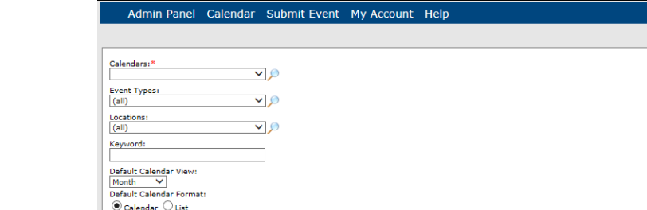

A calendar URL provides a shortcut for your guests or users to navigate to calendars in Master Calendar. For example, a user can specify one or more calendars in your system for which they want to view events, the specific type of event to view on these calendars, and for a specific event type, only those event types that take place at a specific location. A URL can be for a single calendar or it can be for a calendar that combines the events from multiple calendars.This topic guides you in creating a calendar URL and editing existing calendar URL.
When you are adding a calendar URL, the fields that appear on the URL page are determined by what is currently configured and active in Master Calendar. For example, if you do not have any event types currently configured and active in Master Calendar, then the Event Types dropdown list is not displayed on the URLs page. The following procedure is shown with all the available options for adding a calendar URL. To configure optional information such as event types, see Configuring Optional Information.
1. On the Admin menu, point to Groupings and Calendars, and then click Calendar URLs. The Calendar URL page opens.

2. Enter or edit the information for the URL.
| Calendar URL Information Fields | |
| Field | Description |
| Calendars | A list of all active calendars to which you have access as Calendar Manager. Click the Lookup icon to open the Calendars dialog box and select the calendar or calendars. |
| Event Types | A list of all active event types that are currently configured in Master Calendar. Click the Lookup icon to open the Event Types dialog box and select the event types by which to search. |
| Locations | A list of all active event locations that are currently configured in Master Calendar. Click the Lookup icon to open the Locations dialog box and select the locations by which to search. |
3. In the Keyword field, enter the search string by which to search for specific events.The search is limited to the exact order of the characters in the string; however, the search string is not case-sensitive and the search string can be found anywhere in the search results. For example, the search string “ball” can return Football, Baseball, Ballgame, and so on and these search results can appear in the event name, the event description, and so on.
4. Click Make URL. Master Calendar creates the calendar URL.
5. Optionally, click Test URL to verify that the system displays the correct calenders with the correct information.
6. To paste the URL wherever you need to use it (in a document, in an email, and so on):
• Click Cut and Paste URL to automatically select the URL.
• With the cursor on the selected URL, use CTRL-C or right-click and on the context menu that opens, select Copy.
• Place the cursor where you want to paste the URL and use CTRL-V or right-click and on the context menu that opens, select Paste.
Page tags: article:topic